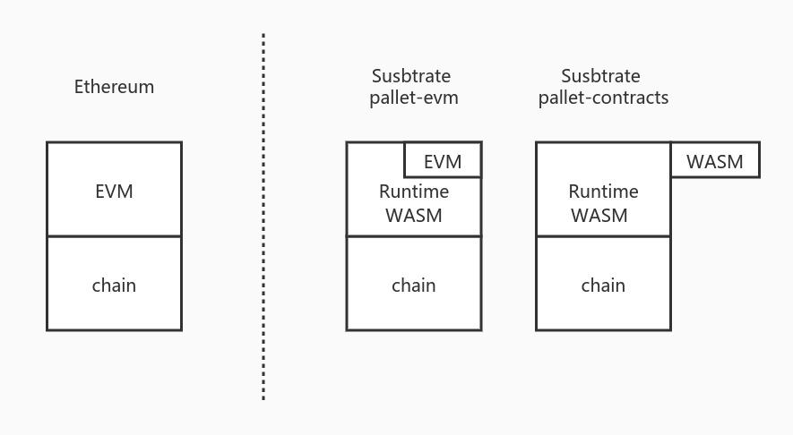

合约综述
区块链运行合约的模型从本质上可以认为是 “区块链的环境（分布式共识系统）”+“能运行一段逻辑的平台”，例如
- 比特币的模型可以拆成区块模型/PoW + 比特币脚本
- 以太坊的模型可以拆成区块，状态模型/PoW + EVM
- Substrate的模型可以拆成区块，状态模型/Bft共识 + Runtime
因此一般来说，我们可以将区块链的模型拆成
- 运行区块链的底层系统：提供分布式可信环境
- 链的业务逻辑：运行在这个可信环境中
而由于区块链系统的特性，要求对相同的代码，相同的状态，执行的结果一定需要一致，因此在提供“链的业务逻辑”这一层，为了保证执行结果的一致性，要求整个运行环境必须是“无副作用的”，因此不会因为运行节点的不一致（指不是同一个节点）而导致运行的结果不一致。
因此为了保证这种特性，绝大部分区块链都会采用沙盒/虚拟机的模型加上裁剪一些功能来做到。
“运行合约的平台”即是一种链的业务逻辑，且这种业务逻辑特殊在其上面可运行的代码是开放的，合约内容不受链本身控制。因此对于这种情况，更需要一种“沙盒”的环境来隔离各个合约之间的运行。
什么是沙盒（虚拟机）
“沙盒”在计算机领域中的概念很广泛，而在区块链中，一般而言沙盒都会由一个虚拟机去运行（因为使用虚拟机最容易模拟沙盒的环境）。
因此不同的链就会采用不同的虚拟机来运行合约的沙盒：
-
Ethereum：
Gavin Wood 写的黄皮书提出了EVM的模型，创建了EVM虚拟机的概念并拟定了EVM的OP_CODE。之后设计了Solidity编译到OP_CODE，才有了Ethereum的整个生态。相当于Ethereum处理区块链的合约沙盒模型，从零到一构建所有设施。因此Solidity的语法以及EVM能做的事对比现在的区块链显得十分简陋（例如solidity的语法，EVM的栈深限制等等），但其作为先行者开创了区块链合约虚拟机模型先河。
-
Fabric:
作为联盟链，在使用场景上与公有链存在区别。因此Fabric提出链码的概念，并将链码运行在了docker中。docker就是比较重的一种虚拟机（相对于EVM而言），因此与EVM比较，Fabric的链码可以做到比Solidity更多的事，当然相对的，其运行的代价与EVM相比就高得多。
-
EOS：
EOS采用了Wasm作为合约的虚拟机，也是当时EOS的卖点。相比于运行Solidity的EVM，EOS的Wasm虚拟机的运行效率高了许多，以C++作为编译到Wasm的语言也天然拉近了许多传统的开发者。EOS作为Wasm虚拟机的先行者，在当时已经体现出Wasm相对于EVM的优势，但是由于其合约模型的设计（见下一章节）的缺陷以及当时环境的约束，再加上EOS并非真正的去中心化系统，导致EOS并没有很好的发挥出Wasm合约系统的能力。
-
Substrate 的
pallet-contracts：pallet-contracts采用了Wasm虚拟机来运行合约，当前出于安全考量只采用了Wasmi解释器来执行Wasm。但其合约模型与EVM的合约模型近似（见下一章节）。Wasm虚拟机与EVM同样具有启动快，随用随丢的特性，具备高性能和高扩展性的同时又不像docker， JVM一样太过庞大。因此Wasm慢慢在除了浏览器环境以外的更多场景被采用，例如边缘计算，热更新等等。所以当前越来越多的新区块链在需要一个沙盒环境时会将Wasm虚拟机作为主要方案。另一方面Wasm也具备从不同语言编译到Wasm的特性，例如rust，assemblyscript，c++等等，可以吸引到各类开发者加入到合约开发过程中。 -
其他：
其他区块链为了完成这个“沙盒”的目标也会有各自的方案，有的联盟链采用了裁剪过的JVM，有的公链采用了
RISC-V的虚拟机，有的链采用了从零设计一个虚拟机（如libra）。这些方案各自有各自的需求与特性，但从模型上而言，无论什么方案，最终目标都是为了提供一个虚拟机环境以运行合约沙盒。
运行合约的沙盒
上文已描述链的业务逻辑大部分会运行于沙盒的系统中，且“运行合约”这种业务逻辑更是需要沙盒隔离。而另一方面Substrate的runtime就是一个沙盒环境（运行于Wasm中），因此在Substrate的合约模块（pallet-emv，pallet-contracts），就是需要在一个沙盒环境中运行另一个沙盒，如下图所示：

其中：
- 左边是以太坊模型，表示每运行一个合约，需要在链的平台上启动一个EVM虚拟机去运行
- 右边是Substrate模型，我们当前已知Substrate的链的业务逻辑是运行在Wasm虚拟机当中的：
pallet-EVM：将以太坊的EVM编译到了Runtime Wasm当中，因此每运行一个合约实际上与以太坊一致，创建了一个EVM虚拟机去运行。如果链是以Wasm形态运行，即是在Wasm虚拟机中生成了一个EVM虚拟机去运行。pallet-contracts：Wasm合约使用Wasm虚拟机运行合约，与pallet-evm不同的地方是，如果链是以Wasm形态运行，Wasm合约的虚拟机是跳出当前Runtime Wasm虚拟机重新创建了一个新的Wasm虚拟机运行。- 当前（在substrate的提交之前
0b0d124d）Runtime的Wasm虚拟机推荐采用的是Wasmtime而pallet-contracts合约只能采用Wasmi。 pallet-contracts也可以使用Wasmtime执行，但是当前parity认为Wasmtime不可控性比较大，因此暂时还未采用Wasmtime。当前他们有相关计划，也有原型代码来使用Wasmtime运行pallet-contracts的合约。（注1）
- 当前（在substrate的提交之前
- 总之运行合约的过程中，大部分链都采用了一种沙盒的模型去运行合约。而对于EVM，
pallet-contracts模型而言，是每运行一个合约就会创建一个虚拟机。
注解
Wasmtime是实现了JIT的Wasm虚拟机，而Wasmi是纯解释器型的Wasm虚拟机。Wasmtime的执行效率比Wasmi高很多。